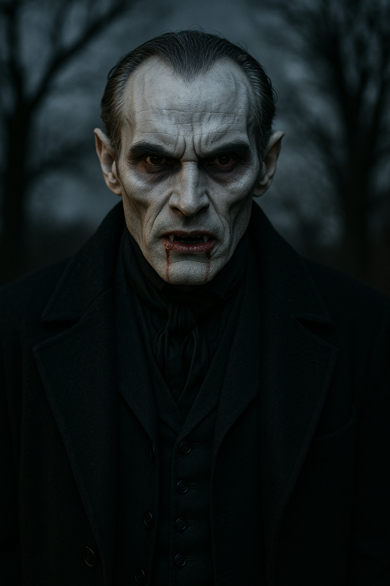
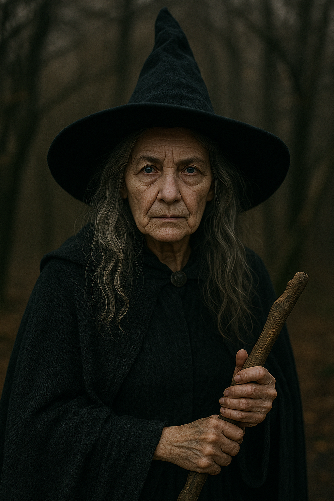

Ghost

Vampire

Werewolf

Witch
Skeleton
Zombie
Use this information to compare the monsters and prove your knowledge of English grammar. Pay attention to the numbers and descriptions!
| Monster | Age (Years) | Height (Metres) | Speed (kph) | Diet | Special Skill / Notes |
|---|---|---|---|---|---|
| Vampire üßõ | 550 | 1.85 | 45 | Blood | The most intelligent of all the monsters. Can hypnotize prey. |
| Werewolf üê∫ | 15 | 2.15 | 60 | Meat | The loudest howler in the group. Has very sharp claws. |
| Zombie üßü | 5 | 1.70 | 5 | Brains | The slowest monster. Extremely strong, but easily distracted. |
| Ghost üëª | 300 | 1.75 | 90 | Nothing | Can travel through walls. The fastest monster, but the least aggressive. |
| Witch üßô‚Äç‚ôÄÔ∏è | 80 | 1.60 | 50 | Potions | The most colorful monster (always wears purple and green). Can cast terrible spells. |
| Skeleton üíÄ | 700 | 1.80 | 20 | Air | The oldest monster. Easily falls apart‚Äîthe most fragile monster. |
| Team | Score |
|---|---|
| Team Bats ü¶á | 0 |
| Team Spiders üï∑Ô∏è | 0 |
| Team Wolves üê∫ | 0 |
| Team Ghosts üëª | 0 |
Ghost
Vampire
Werewolf
Witch
Skeleton
Zombie
PROMPT: ...
TASK: ...
(Hint: The correct comparison is worth 3 points!)